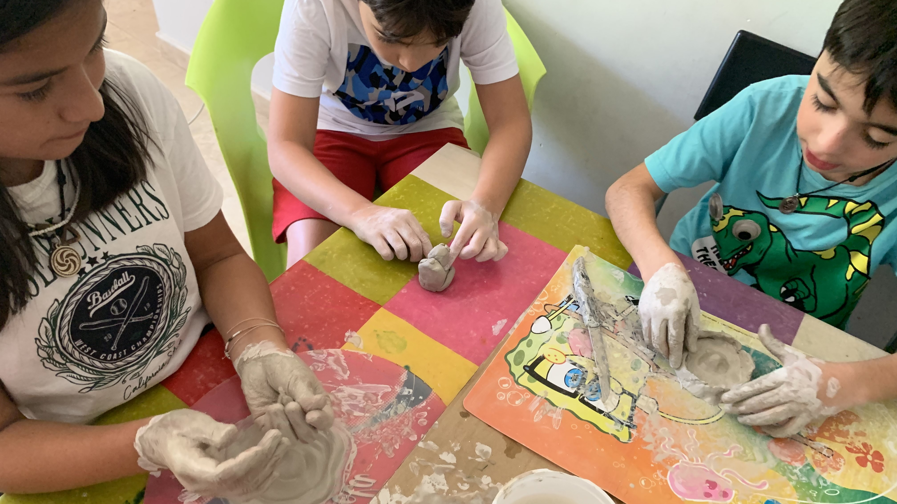
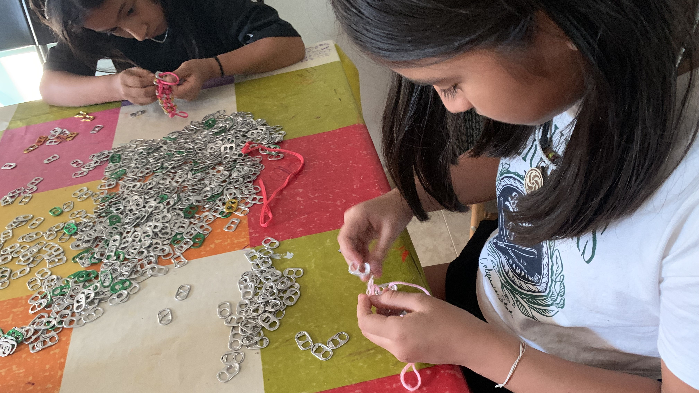

ACTIVIDADES
artísticas
Realizamos actividades artísticas como cerámica, dibujo, manualidades, escultura, papiroflexia, customización, invención... para fomentar la creatividad y la imaginación de los niños.
físicas

Realizamos actividades deportivas como balonmano, voleibol, bádminton, tenis de mesa, tiro con arco, artes marciales, patinaje, escalada y hockey, entre otras, para fomentar el desarrollo físico, la coordinación y el trabajo en equipo de los niños.
cognitivas
Realizamos actividades cognitivas como ajedrez, reciclaje, aprendizaje de idiomas, música, teatro, juegos y talleres, entre otras, para fomentar el desarrollo intelectual y la concentración de los niños.